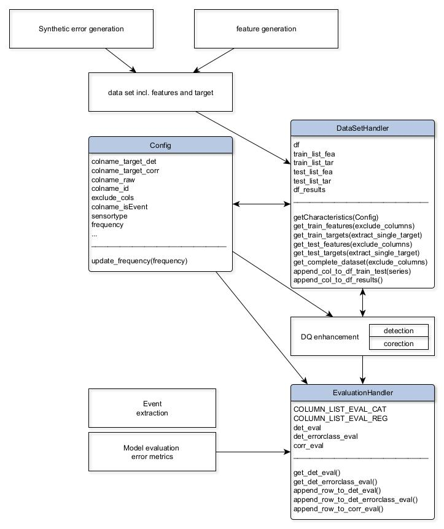
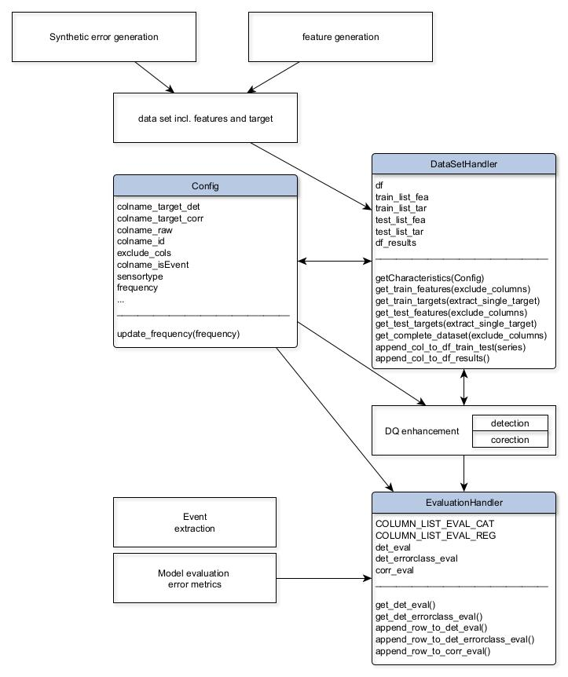

Usage
This chapter can give you an overview and a first look about the individual functionalities of each category. Selected functions are explained in detail. This will help you for a better understanding of our function types and their usage.
This chapter can give you an overview and a first look about the individual functionalities of each category. Selected functions are explained in detail. This will help you for a better understanding of our function types and their usage.
